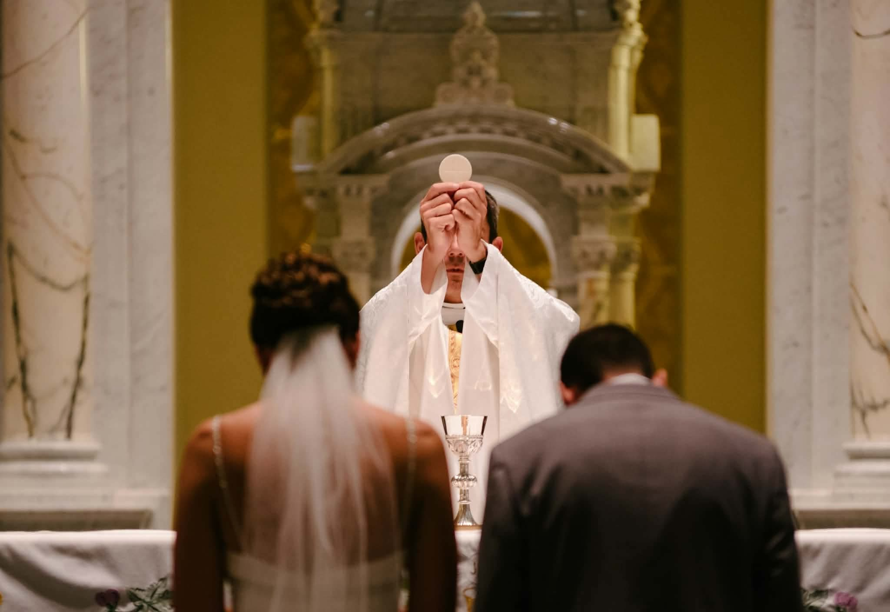

SACRAMENT OF VOCATION
A Lifelong
Covenant of Love
The sacrament of matrimony is a sacred, lifelong covenant where a man and a woman unite as partners for life. In Christian tradition, it reflects Christ's love for the Church and gives the couple spiritual grace to live in love, fidelity, and holiness.
It mirrors Christ's love for the Church, grants special grace to help couples reach holiness, and builds a stable foundation for raising families.

A lifelong covenant of faithful love.
UNDERSTANDING MATRIMONY
What happens in Matrimony?
Love
The Sacrament of Matrimony produces two primary effects: a permanent, exclusive perpetual bond sealed by God, and sacramental grace that perfects human love, strengthens unity, and helps couples attain holiness, raise children, and mirror Christ's love for the Church.
Unity
Marriage unites husband and wife in a lifelong partnership. They are called to support one another, share their joys and difficulties, and grow together in love and faith.
Family
The Sacrament of Matrimony connects deeply to Christian life by mirroring Christ’s faithful love for the Church. It gives couples special grace to love each other, forgive faults, and build a "domestic church' at home, turning daily family life into a path toward holiness and eternal life.
Signs and Symbols of Matrimony.
Matrimony uses meaningful signs and symbols that represent the love, commitment, and lifelong covenant between husband and wife.
Marriage Vows — Express the couple's promise to love, honor, and remain faithful to one another.
Wedding Rings — Symbolize the couple's unending love and lifelong commitment to each other.
Unity Candle — Represents the joining of two lives into one loving partnership.
Blessing — Represents God's grace and guidance for the married couple throughout their life together.
WHY IT MATTERS
Matrimony and the Christian Life
Matrimony is important because it establishes a lifelong partnership built on love, faithfulness, and mutual support. Through marriage, spouses are called to help one another grow closer to God and become better people together.
Matrimony also reminds Christians of the importance of faithful love and family. Married couples are called to care for one another, welcome and nurture their children, and become witnesses of God's love through their lives.
LEARN MORE
The Sacrament of Matrimony
Learn more about the Sacrament of Matrimony.